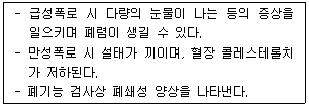
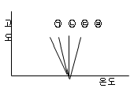
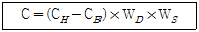
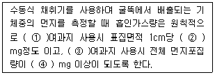
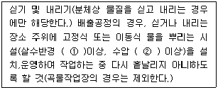

대기환경산업기사 (2013-09-28 기출문제)
1과목: 대기오염개론
1. 굴뚝 유효높이에 관련된 인자 및 그 영향에 관한 설명으로 옳지 않은 것은?
- 면도 배출가스의 열배출율이 클수록 증가한다.
- 배출가스의 유속이 작을수록 증가한다.
- 의기와의 온도차가 클수록 증가한다.
- 굴뚝의 통풍력이 클수록 증가한다.
(정답률: 86%)

2. 열섬(Heat island) 현상에 관한 설명으로 옳지 않은 것은?
- 통상 비가 많이 오며 안개가 자주 생긴다.
- 도시가 시골에 비해서 공기의 이동은 적으나, 열방출량이 크기 때문에 발생하는 현상이다.
- 이 현상으로 인해 도시의 중심부가 주위보다 고온이 되어 상승기류가 발생하고 도시 주위의 시골에서 도시로 바람이 부는 것을 전원농이라 한다.
- 저기압의 영향으로 흐린 하늘에 바람이 거의 없는 낮에 잘 발생한다.
(정답률: 67%)
3. 다음 대기 조성물질의 월별 농도변화 양상 중 약간의 불규칙성을 제외하고서는 광화학반응에 의해 대도시에서 뚜렷하게 하고동저(夏高東低) 형의 분포를 나타내는 것은?
- O3
- SO2
- NO2
- CO2
(정답률: 74%)
4. 다음 중 대기 내에서 금속의 부식속도가 일반적으로 빠른 것부터 순서대로 연결된 것은?
- 철 ＞ 아연 ＞ 구리 ＞ 알루미늄
- 구리 ＞ 아연 ＞ 철 ＞ 알루미늄
- 알루미늄 ＞ 철 ＞ 아연 ＞ 구리
- 철 ＞ 알루미늄 ＞ 아연 ＞ 구리
(정답률: 92%)
5. 어느 도시지역이 대기오염으로 인하여 시골지역보다 태양의 복사열량이 10% 감소한다고 한다. 도시지역의 지상온도가 255K 일 때 시골지역의 지상온도는 얼마가 되겠는가? (단, 스테판 볼츠만의 법칙을 이용한다.)
- 약 288K
- 약 275K
- 약 269K
- 약 262K
(정답률: 57%)
6. 다음은 어떤 물질에 폭로되었을 때에 관한 설명인가?

- 셀레늄
- 바나듐
- 수은
- 비소
(정답률: 86%)
7. 다음 중 대기오염물질의 밀도가 큰 순서대로 옳게 나열된 것은? (단, 기타 조건은 동일)
- SO2 ＞ NO2 ＞ CO2 ＞ CH4
- SO2 ＞ NO2 ＞ NH3 ＞ H2S
- SO2 ＞ CS2 ＞ HCHO ＞ H2S
- SO2 ＞ HCHO ＞ H2S ＞ CS2
(정답률: 84%)
8. 다음 특정물질의 종류와 그 화학식의 연결로 옳지 않은 것은?(오류 신고가 접수된 문제입니다. 반드시 정답과 해설을 확인하시기 바랍니다.)
- CFC-214 : C2F4CI4
- Halon-2402 : C2F4Br2
- HCFC-133 : CH3F3CI
- HCFC-222 : C3HF2CI5
(정답률: 66%)
9. 다음 대기오염물질을 분류했을 때, 1차 오염물질로만 옳게 짝지어진 것은?
- N2O3, O3
- H2S, H2O2
- HCl, CH3COOONO2
- SiO2, CO
(정답률: 79%)
10. 입자크기 측정법 중 현미경을 이용하는 방법으로 투영된 입자의 모양이 원형이 아닐 때 입자의 최장 또는 최단 크기로 정의하거나 여러 방향으로 나누어 크기를 측정하여 산술평균한 값으로 정의하기도 하는 직경은?
- Optical diameter
- Equivalent diameter
- Stokes diameter
- Aerodynamic diameter
(정답률: 80%)
11. 연돌 내의 배출가스 평균온도는 320℃, 배출가스속도는 7m/s, 대기온도는 25℃이다. 굴뚝의 지름이 600cm, 풍속이 5m/s 일 때, 통풍력을 80mmH2O로 하기 위한 연돌의 높이는? (단, 공기와 배출가스의 비중량은 1.3kg/Sm3, 연돌내의 압력손실은 무시한다.)
- 약 85m
- 약 95m
- 약 110m
- 약 135m
(정답률: 54%)
12. 무차원수로서 근본적으로 대류난류를 기계적인 난류로 전환시키는 율을 측정한 것으로, 지구경계층에서의 기류인정도를 나타내는 척도로 이용하고 있는 것은?
- Reynold's number
- Richardson's number
- Radiation number
- Cunningham number
(정답률: 77%)
13. 온실효과에 관한 설명으로 옳지 않은 것은?
- 가시광선은 통과시키고 적외선을 흡수해서 열을 밖으로 나가지 못하게 함으로써 보온작용을 하는 것을 대기의 온실효과라 한다.
- CO2의 주요 흡수파장영역은 35~40μm정도이다.
- O3의 주요 흡수파장영역은 9~10μm정도이다.
- 온실효과에 대한 기요도(%)는 CH4 ＞ N2O이다.
(정답률: 65%)
14. 대기인정도와 연기형태에 관한 설명으로 옳지 않은 것은?
- Looping형은 대기가 매우 불안정한 경우, 맑은 날 오후에 발생하기 쉽다.
- Lofting형은 굴뚝의 높이보다 낮은 지표에 역전층이 존재한다.
- Fumigation형은 상층은 불안정, 하층은 안정한 경우에 발생하며, 오염물질의 농도가 하루동안 지속적으로 높아진다.
- Doning형은 대기가 중립조건일 때 발생하며, 오염의 단면분포는 가우시안 분포를 갖는다.
(정답률: 76%)
15. 대기의 상태가 약한 역전일 때 풍속은 3m/s이고, 유효 굴뚝 높이는 78m이다. 이 때, 지상의 오염물질이 최대 농도가 될 때의 착지거리는 얼마인가? (단, sution의 최대착지거리의 관계식을 이용하여 계산하고, Ky, Kz는 각각 0.13, 안정도계수(n)는 0.33을 적용할 것.)
- 2123.9m
- 2546.8m
- 2793.2m
- 3013.8m
(정답률: 59%)
16. 다음 대기오염과 관련된 역사적 사건 중 주로 자동차 등에서 배출되는 오염물질로 인한 광화학 반응에 기인한 것은?
- 뮤즈 계곡 사건
- 런던 사건
- 로스엔젤레스 사건
- 포자리카 사건
(정답률: 87%)
17. 다음 가솔린 자동차 운전조건 중 일산화탄소를 가장 적게 배출하는 것은?
- 감속
- 정속
- 공회전
- 심한 가속
(정답률: 65%)
18. 표준상태에서 일산화질소 6.5ppm은 20℃, 1기압에서 몇 mg/m3인가?
- 7.3
- 8.1
- 9.6
- 12.4
(정답률: 66%)
19. 산성비와 괄년된 토양성질에 관한 설명 중 가장 거리가 먼 것은?
- 토양의 성질 중 결정성의 정토광물은 강산적이고, 결정도가 낮은 점토광물은 약산적이다.
- 토양과 흡착되어 있는 양이온을 교환성 양이온 이라 하고, 이 중 양적으로 많은 것은 Ca2+, Mg2+, Na+, K+, Al3+, H+등 6종이다.
- Ca2+와 Mg2+이외의 양이온을 교환성 염기라 하며, 토양의 pH는 흡착되어 있는 교환성 음이온에 의해 결정된다.
- 토양입자는 일반적으로 하전으로 대전되어 각종 양이온을 정전기적으로 흡착하고 있다.
(정답률: 63%)
20. 다음 4종류의 고도에 따른 기온분포도 중 plume의 상하 확산폭이 가장 적어 최대착지거리가 큰 것은?

- ㉠
- ㉡
- ㉢
- ㉣
(정답률: 73%)
2과목: 대기오염 공정시험 기준(방법)
21. 굴뚝 배출가스 유속 및 유량 측정에 사용되는 장치에 관한 설명으로 옳지 않은 것은?
- 피토우관은 스텐레스와 같은 재질의 금속관으로, 관의 바깥지름의 범위는 4~10mm 정도이어야 한다.
- 차압계로는 경사마노미터, 전자마노미터 등을 사용하여 굴뚝배출가스의 차압을 측정할 수 있도록 하며, 최소 0.5mmHg 눈금을 읽을 수 있는 마노미터를 사용한다.
- 피토우관 계수는 사전에 확인되어야 하며, 고유번호가 부여되고 이 번호는 지워지지 않도록 관 몸체에 새겨야한다.
- 피토우관의 각 분기관과 오리피스 평면과의 거리는 바깥지름의 1.⑤~1.50배 사이에 있어야 한다.
(정답률: 63%)
22. 다음은 하이볼륨에어샘플러법에 의한 각 측정지점의 포집먼지량과 풍향, 풍속의 측정 결과로부터 비산먼지의 농도(C)를 구하는 식이다. 이 식에 관한 설명으로 옳지 않은 것은?

- CH는 포집먼지량이 가장 많은 위치에서의 먼지농도(mg/m3)를 나타낸다.
- CB는 대조위치에서의 먼지농도(mg/m3)로서 대조위치를 선정할 수 없을 때는 보통 0.15mg/m3로 한다.
- WD는 풍향 측정결과로부터 구한 보정계수로 전 시료채취 기간 중 주풍향이 90° 이상 변할 때는 2.0으로 한다.
- WS는 풍속 측정결과로부터 구한 보정계수로 풍속이 0.5m/s 미만 또는 10m/s 이상되는 시간이 전 채취시간의 50% 이상일 때 1.2로 한다.
(정답률: 76%)
23. A보일러 굴뚝 배출가스 온도는 240℃, 피토우관에 의한 등압은 7.5mmH2O이었다. 이 굴뚝 배출가스 유속은? (단, 대기압 tatm, 피토우관계수는 1.2로 한다.)
- 약 11.5m/s
- 약 13.5m/s
- 약 15.5m/s
- 약 17.5m/s
(정답률: 53%)
24. 흡광광도법에서 장치 및 장치보정에 관한 설명으로 옳지 않은 것은?
- 가시부와 근적외부의 광원으로는 주로 텅스텐 램프를 사용하고 자외부의 광원으로는 주로 중수소 방전관을 사용한다.
- 일반적으로 흡광도 눈금의 보정은 110에서 3시간 이상 건조한 과망간산칼륨(1급이상)을 N/10 수산화나트륨 용엑에 녹인 과망간산나트륨용액으로 보정한다.
- 광전관, 광전자증배관은 주로 자외 내지 가시파장 범위에서 광전도셀은 근적외 파장범위에서, 광전지는 주로 가시파장 범위 내에서의 광전측광에 사용된다.
- 광전광도계는 파장 선택부에 필터를 사용한 장치로서 단광속형이 많고 비교적 구조가 간단하여 작업분석용에 적당하다.
(정답률: 76%)
25. 배출가스 중 금속화합물을 원자흡수분광광도법(원자흡광광도법)에 의해 측정하고자 할 때, 사용되는 용어의 정의로 옳지 않은 것은?
- 감도 : 각 원소 성분에 대해 입사광의 0.5%(0.0022흡광도)를 흡수할 수 있는 사료의 최대 농도를 의미한다.
- 표준원액 : 정확한 농도를 알고 있는 비교적 고농도의 용액으로, 일반적으로 1000mg/kg 농도에서 0.3%이내의 불확도를 나타내야 한다.
- 매질효과 : 시료 용액의 점도, 표면장력, 휘발성 등과 같은 물리적 특성이나 화학적 조성의 차이에 의해 원자화율이 달라지면서 정량성이 저하되는 효과를 의미한다.
- 원자흡수 : 바닥상태의 원자가 높은 전자에너지 준위를 갖는 들뜬상태로 될 때 소요되는 전자기복사선의 흡수를 의미한다.
(정답률: 61%)
26. 다음은 굴뚝에서 배출되는 먼지측정방법에 관한 설명이다. ( )안에 알맞은 말을 순서대로 옳게 나열한 것은?

- 원통형, 0.5, 원형, 1
- 원통형, 1, 원형, 5
- 원형, 0.5, 원통형, 1
- 원형, 1, 원통형, 5
(정답률: 72%)
27. 이온크로마토그래피에서 검출한계는 각 분석방법에서 규정하는 조건에서 출력신호를 기록할 때 잡음신호의 몇 배에 해당하는 목적성분의 농도를 검출한계로 하는가?
- 1/2배
- 2배
- 10배
- 100배
(정답률: 75%)
28. 다음 중 원자흡광광도법에서 광원부로 가장 적합한 장치는?
- 텅스텐램프
- 플라즈마젯
- 중공음극램프
- 수소방전관
(정답률: 77%)
29. 굴뚝 배출가스 내의 페놀시료 채취방법 중 용액흡수법에 관한 설명으로 가장 거리가 먼 것은?
- 시료가스 채취관은 석영관, 스테인레스강관, 4불화 메틸렌수지관 등을 사용한다.
- 시료 중에 먼지가 흔입되는 것을 방지하기 위하여 채취관의 앞 끝에 알칼리 유리솜 등을 넣는다.
- 채취관과 삼방콕크 등 가열되는 접속부분은 갈아 맞춤 또는 실리콘 고무관을 사용하며, 삼방콕크 등의 갈아 맞춤 부분에는 그리이스를 발라서는 안된다.
- 시료중의 페놀류와 수분이 응축하지 않도록 시르가스 채취관과 흡수병 사이를 가열해야 한다.
(정답률: 59%)
30. 굴뚝 배출가스 중 일산화탄소 분석을 위한 정전위 전해법에 관한 설명으로 옳지 않은 것은?
- 90% 응답 시간은 5분 이내로 한다.
- 정전위 전해법을 이용한 계측기는 소형 경량으로서 이동 측정에 적합하다.
- 프로판 100ppm의 간섭영향 시험용 가스를 도입하였을 때 그 영향이 1ppm이하이어야 한다.
- 시료가스 유량 변화에 따른 안정성은 최대 눈금값의 2% 이내로 한다.
(정답률: 77%)
31. 굴뚝배출가스 중의 먼지시료를 보통형(1형) 흡인노즐을 가진 수동식 채취기를 사용하여 채취하는 경우에 다음의 조건에서의 등속흡인 유량은? (단, 대기압 : 165mmHg, 건식가스미터온도 : 20℃, 가스미터게이지압 : 1mmHg, 배출가스온도 : 125℃, 배출가스유속 : 7.5m/s, 배출가스 중 수증기의 부피백분율 : 10%, 흡인노즐내경 : 6mm, 측정점에서의 정압 : -1.5mmHg)
- 2.4L/min
- 4.5L/min
- 8.4L/min
- 14.5L/mim
(정답률: 46%)
32. 환경대기 중의 시료채취방법 중 고용량 공기포집기의 포집용 여과지에 관한 설명으로 가장 거리가 먼 것은?
- 흡수성은 작고, 가스상 물질의 흡착도 적은 것이어야 한다.
- 입자상 물질의 포집에 사용하는 여과지는 0.5μm되는 입자률 95%이상 포집할 수 있어야 한다.
- 분석에 방해되는 물질은 함유되지 않은 것이어 야 한다.
- 사용되는 여과지의 재질은 일반적으로 유리섬유, 석영섬유, 폴리스틸렌, 불소수지 등이다.
(정답률: 70%)
33. 흡광광도법에서 자동기록식 광전분광광도계의 파장교정에 이용되는 것은?
- 중크롬산칼륨용액의 흡광도
- 간섭필터의 흡광도
- 커트필터의 미광
- 흡용유리의 흡수스펙트럼
(정답률: 73%)
34. 흡광광도법으로 굴뚝 배출가스 중 이황화탄소를 측정할 때 사용되는 흡수액으로 옳은 것은?
- 디에틸아민동용액
- 디에틸디티오가바인산나트륨 용액
- 디에틸아민남용액
- 디에틸아민황산염용액
(정답률: 63%)
35. 다음 중 원자흡광광도법에서 분석오차를 유발하는 일반적인 요인적으로 가장 거리가 먼 것은?
- 표준시료와 분석시료의 조성이나 물리적, 화학적 성질의 차이
- 분무기 또는 버어너의 열화
- 측광부의 불안정 또는 조절 불량
- 불꽃을 투과하는 광속의 위치의 조정 불량
(정답률: 68%)
36. 환경대기 내 질소산화물 농도 측정방법 중 자동연속측정방법이 아닌 것은?
- 화학발광법
- 야곱스호흐하이저법
- 살츠만법
- 흡광차분광법
(정답률: 75%)
37. 가스크로마토그래프법에서 장치의 기본구성에 관한 설명으로 옳지 않은 것은?
- 기록계는 스트립 차아트식 자동평형 기록계로 스팬 전압 1mV, 펜 응답시간 2초 이내, 기록지 이동속도는 10mmf분을 포함한 다단변속이 가능한 것이어야 한다.
- 분리관오븐의 온도조절 정밀도는 ±0.5℃범위 이내(오븐의 속도가 150부근일 때) 이어야 한다.
- 가스를 연소시키는 검출기를 수용하는 검출기 오븐은 검출 효율을 높이기 위하여 오븐 내에 가스가 오래 동인 체류되는 구조이어야 한다.
- 방사성 동위원소를 사용하는 검출기에 대하여는 별도로 과열방지기구, 누출방지기구 등을 설치해야 한다.
(정답률: 57%)
38. 사업장의 최종배출구인 굴뚝에서 A물질의 실측농도값이 150ppm이었고, 이 때 실축산소농도는 5.5%이었다. 표준산소로 보정한 A물질의 농도는? (단, A물질은 표준산소농도를 적용받는 물질이며, 표준산소농도 : 4%이다.)
- 130.4
- 157.5
- 164.5
- 186.4
(정답률: 68%)
39. 굴뚝 배출가스 내 알데히드 및 케튼화합물의 분석방법 중 액체크로마토그래프법에 관한 설명으로 옳지 않은 것은?
- 배출가스중의 알데히드류는 흡수액 2.4-DNPH과 반응하여 하이드라존 유도체를 생성한다.
- 흡인노즐은 석영제로 만들어진 것으로 흡인노즐의 꼭지점은 45°이하의 예각이 되도록 하고 매끈한 반구모양으로 한다.
- 하이드라존은 UV영역, 특히 350~380nm에서최대 흡광치를 나타낸다.
- 흡입관은 수분응축 방지를 위해 시료가스 온도를 100이상으로 유지할 수 있는 가열기를 갖춘 보로실리케이트 또는 석영 유리관을 사용한다.
(정답률: 79%)
40. 대기오염공정시험기준상 '시험의 기재 및 용어'에 관한 설명으로 옳지 않은 것은?
- 용액의 액성표시는 따로 규정이 없는 한 유리전극법에 의한 pH미터로 측정한 것을 뜻한다.
- 시험조작중 “즉시” 란 30초 이내에 표시된 조작을 하는 것을 뜻한다.
- “정량적으로 씻는다” 함은 어떤 조작으로부터 다음 조작으로 넘어갈 때 사용한 비이커, 플라스크 등의 용기 및 여과막 등에 부착한 정량대상 성분을 사용한 용매로 씻어 그 세액을 합하고 먼저 사용한 같은 용매를 채워 일정용량으로 하는 것을 뜻한다.
- “항량이 될 때 까지 건조한다 또는 강열한다”라 함은 따로 규정이 없는 한 보통의 건조방법으로 1시간 더 건조 또는 강열할 때 전후 무게의 차가 매 g당 0.5mg이하 일 때를 뜻한다.
(정답률: 77%)
3과목: 대기오염방지기술
41. 현재 500mg/m3의 먼지가 배출되고 있는 시설에 50% 효율을 가진 전처리 장치를 설치하였다. 이 시설의 먼지의 배출허용기준은 10mg/m3인데, 집진효율이 몇 %이상인 2차 처리장치를 설치하면 배출허용기준을 맞출 수 있겠는가?
- 89%
- 91%
- 94%
- 96%
(정답률: 57%)
42. 다음 중 석탄의 탄회도가 클수록 증가하지 않는 것은?
- 고정탄스
- 착화온도
- 휘발분
- 연료비
(정답률: 74%)
43. 다음 중 액화석유가스(LPG)에 관한 설명으로 옳지 않은 것은?
- 천연가스에서 회수되기도 하지만 대부분은 석유정체시 부산물로 얻어진다.
- 보통 LNG보다 발열량이 낮으며, 착화온도는 200~250℃이다.
- 비중이 공기보다 무거워 누출될 경우, 인화·폭발성의 위험이 있다.
- 액체에서 기체로 될 때, 증발열이 있으므로 사용하는데 유의할 필요가 있다.
(정답률: 75%)
44. 세정집진장치에서 관성충돌계수를 크게 하는 조건이 아닌 것은?
- 처리가스와 액적의 상대속도가 커야 한다.
- 먼지의 밀도가 커야 한다.
- 액적의 직경이 커야 한다.
- 먼지의 입경이 커야 한다.
(정답률: 62%)
45. 다음 중 흡착제의 흡착능과 가장 관련이 먼 것은?
- 포화
- 보전력
- 파과점
- 유전력
(정답률: 76%)
46. 탄소 70kg과 수소 20kg을 완전연소 시키는데 필요한 이론적인 산소의 양은?
- 227kg
- 286kg
- 320kg
- 347kg
(정답률: 55%)
47. 공기가 과잉인 경우로 열손실이 많아지는 때의 등가비(  )상태는?
)상태는?
- = 1
 ＜ 1
＜ 1 ＞ 1
＞ 1 = 0
= 0
(정답률: 71%)
48. A석유의 원소조정(질량)비가 탄소 78%, 수소 21%, 황 1%이다. 이 석유 115kg을 완전연소 시키는데 필요한 이론공기량은?(오류 신고가 접수된 문제입니다. 반드시 정답과 해설을 확인하시기 바랍니다.)
- 12.6Sm3
- 18.9Sm3
- 25.6Sm3
- 47.3Sm3
(정답률: 52%)
49. A여과집진장치에서 99%의 집진효율로 먼지를 제거하였는데 성능저하로 인해서 96%의 집진효율을 갖게 되었다면 먼지의 배출농도는 처음보다 몇 배 증가 하겠는가?
- 1.5배
- 2배
- 3배
- 4배
(정답률: 74%)
50. 처리가스량 36000Sm3/hr, 압력손실이 200mmH2O, 송풍기 효율 70%, 여유율 1.8일 때 송풍기의 소요동력은?
- 40kW
- 50kW
- 60kW
- 70kW
(정답률: 66%)
51. 유해가스 처리장치에 사용되는 흡수제에 관한 설명으로 옳은 것은?
- 흡수제가 화학적으로 유해가스의 성분과 비슷할 때 일반적으로 용해도가 크다.
- 흡수제 손실을 줄이기 위해서는 휘발성이 커야 한다.
- 흡수율을 높이고 flooding을 줄이기 위해서는 흡수제의 점도가 커야 한다.
- 흡수제의 빙점은 높고, 비점은 낮아야 한다.
(정답률: 51%)
52. 프로판과 부탄의 용적비가 1:1의 비율로 된 연료가 있다. 이 연료를 완전연소 시킨 후 건조연소가스 중의 CO2는 20%이였다. 이 연료 1Sm3당 건조 연소가스량은?
- 1.75Sm3
- 17.5Sm3
- 3.5Sm3
- 35Sm3
(정답률: 58%)
53. 입자의 비표면적(단위 체적당 표면적)에 관한 설명으로 옳은 것은?
- 입자의 비표면적이 작으면 원심력집진장치의경우 입자가 장치의 벽면에 부착하여 장치벽면을 폐색시킨다.
- 입자의 입경이 작아질수록비표면적은 커진다.
- 입자의 비표면적이 작으면 전기집진장치에서는 주로 먼지가 집진극에 퇴적되어 역전리 현상이 초래된다.
- 입자의 비표면적이 커지면 응집성과 흡착력이 작아진다.
(정답률: 70%)
54. 여과집진장치의 탈진에 관한 jfaud으로 옳지 않은 것은?
- 간헐식 집진 중 진동형 탈진방식은 접착성 먼지의 집진에는 사용할 수 없다.
- 간헐식 집진은 탈진 시 대량의 가스처리에는 부적합하다.
- 연속식 집진 중 충격제트기류 분사형 탈진방식은 집진장치내 운동장치가 많아 탈진주기에 비해 소요되는 시간이 길다.
- 연속식 집진은 탈진 시 먼지의 재비산이 일어나 간헐식에 비해 집진율이 낮고 여과자루의 수명이 짧다.
(정답률: 51%)
55. 다음 중 가스상 오염물질과 그 처리방법의 연결로 적합하지 않은 것은?
- SO2 - 석회수 세정법
- NOx - 촉매 환원법
- HCI - CaCO3에 의한 흡수법
- CO - 촉매 연소법
(정답률: 50%)
56. 다음 중 전기집진장치의 집진실율, 독립된 하전설비를 가진 단위 집진실로 전기적 구획을 하는 주된 이유로 가장 적합한 것은?
- 순간 정전을 대비하고, 저기안전 사고를 예방하기 위함이다.
- 집진효율을 높이고, 효율적인 전력사용을 하기 위함이다.
- 처리가스의 유량분포를 균일하게 하고, 먼지입자의 충분한 체류시간을 확보하게 하기 위함이다.
- 집진실 청소를 효과적으로 하기 위함이다.
(정답률: 65%)
57. 전기집진장치의 전기저항이 높거나 낮을 때 주입하는 물질로 거리가 먼 것은?
- silica gel
- 트리에틸아인
- NH3
- 물
(정답률: 56%)
58. 저위발열량 5000kcal/Sm3의 기체연료 연소시 이론연소온도는? (단, 이론 연소가스량은 20Sm3/Sm3, 연소가스의 평균정압비열은 0.35kcal/Sm3·℃이며, 기준온도는 실온이며, 공기는 예열되지 않고, 연소가스는 해리되지 않는다.)
- 약 560℃
- 약 650℃
- 약 730℃
- 약 890℃
(정답률: 46%)
59. 세정집진장치의 단점으로 거리가 먼 것은?
- 세정수가 다량 필요하며, 한냉기에는 동결방지에 유의 해야 한다.
- 소수성 입자나 가스의 집진효과는 낮다.
- 처리가스의 확산이 어렵고, 굴뚝으로 최종배출 되기 전에 가액분리기를 사용해 제거해 주어야 한다.
- 다른 고효율 집진장치에 비해 설비비가 비싸고, 전기, 여과집진장치보다 설치면적이 큰 편이다.
(정답률: 53%)
60. 탄산수소비(C/H)에 관한 설명으로 옳지 않은 것은?
- 중질연료일수록 C/H비는 크다.
- C/H비가 클수록 이론 공연비는 감소된다.
- C/H비는 휘발유 ＞ 등유 ＞ 경유 ＞ 중유 순으로 감소한다.
- C/H비가 클수록 휘도가 높고, 방사율이 크다.
(정답률: 64%)
4과목: 대기환경 관계 법규
61. 대기환경보전법상 황사피해방지 종합대책 수립 시 반드시 포함되어야 하는 사항으로 가장 거리가 먼 것은? (단, 그 밖의 사항 등은 제외한다.)
- 종합대책 추진실적 및 그 평가
- 황사 발생 감소를 위한 국제협력
- 황사피해 방지를 위한 국내대책
- 대기오염물질과 온실가스를 연계한 통합 대기환경 관리체계의 구축
(정답률: 60%)
62. 대기환경보전법령상 대기오염물질발생량에 따른 사업장 종별 분류기준에 관한 사항으로 옳지 않은 것은?
- 대기오염물질발생량의 합계가 연간 100톤 발생하는 사업장은 1종사업장에 해당한다.
- 대기오염물질발생량의 합계가 연간 80톤 발생하는 사업장은 1종사업장에 해당한다.
- 대기오염물질발생량의 합계가 연간 30톤 발생하는 사업장은 3종사업장에 해당한다.
- 대기오염물질발생량의 합계가 연간 3톤 발생하는 사업장은 4종사업장에 해당한다.
(정답률: 71%)
63. 대기환경보전법령상 제작차에 대한 인증을 생략할 수 있는 자동차에 해당하는 것은?
- 외국인 또는 외국에서 1년 이상 거주한 내국인이 주거를 옮기기 위하여 이주물품으로 반입하는 1대의 자동차
- 군용 및 경호업무용 등국가의 특수한 공용 목적으로 사용하기 위한 자동차와 소방용 자동차
- 박람회나 그 밖에 이에 준하는 행사에 참가하는 자가 전시의 목적으로 일시 반입하는 자동차
- 외국에서 국내의 공공기관 또는 비영리단체에 무상으로 기증한 자동차
(정답률: 51%)
64. 다음은 대기환경보전법규상 비산먼지 발생을 억제하기 위한 시설의 설치 및 필요한 조치에 관한기준이다. ( )안에 알맞은 것은?

- ① 3m, ② 1.5kg/cm2
- ① 3m, ② 3kg/cm2
- ① 5m, ② 1.5kg/cm2
- ① 5m, ② 3kg/cm2
(정답률: 67%)
65. 대기환경보전법령상 기본부과금의 지역별 부과계수 기준중 Ⅱ지역의 부과계수는? (단, Ⅱ지역: 국토의 계획 및 이용에 관한 법률에 따른 공업지역, 개발진흥지구(관광,휴양개발진흥지구는 제외한다.) 수산자원보호구역, 국가산업단지 및 지방산업단지, 전원개발사업구역 및 예정구역)
- 0.5
- 1.0
- 1.5
- 2.0
(정답률: 57%)
66. 대기환경보전법령상 선박의 디젤기관에서 배출되는 대기오염물질 중 대통령령으로 정하는 대기오염물질에 해당하는 것은?
- 황산화물
- 일산화탄소
- 염화수소
- 질소산화물
(정답률: 74%)
67. 대기환경보전법령상 초과부과금 산정 시 적용되는 오염물질 1킬로그램당 부과금액이 다음 중 가장 적은 것은?
- 먼지
- 황산화물
- 암모니아
- 이황화탄소
(정답률: 65%)
68. 대기환경보전법규상 배출시설 및 방지시설 등의 가동개시 신고시 환경부령으로 정하는 시운전 기간기준으로 옳은 것은?
- 가동개시일부터 15일까지의 기간을 말한다.
- 가동개시일부터 30일까지의 기간을 말한다.
- 가동개시일부터 60일까지의 기간을 말한다.
- 가동개시일부터 90일까지의 기간을 말한다.
(정답률: 49%)
69. 대기환경보전법규상 배출시설을 설치·운영하는 사업자에 대하여 조업정지를 명하여야 하는 경우로서 그 조업정지가 주민의 생활 등, 그 밖에 공익에 현저한 지장을 줄 우려가 있다고 인정되는 경우 조업정지처분에 갈음하여 과징금을 부과할 수 있다. 이 때 과징금의 부과기준에 적용되지 않는 것은?
- 오염물질별 부과금액
- 조업정지일수
- 1일당 부과금액
- 사업장 규모별 부과계수
(정답률: 54%)
70. 대기환경보전법규상 2009년 1월 1일부터 적용되는 자동차 연료 제조기준으로 틀린 것은? (단, 경유)
- 10% 잔류 탄소량(%) : 0.15 이하
- 밀도 @15℃(kg/m3) : 815 이상 835 이하
- 다환 방향즉(무기%) : 5 이하
- 윤활성(μm) : 560 이하
(정답률: 61%)
71. 대기환경보전법규상 특정대기 유해물질이 아닌 것은?
- 아닐린
- 벤지딘
- 질소산화물
- 프로필렌 옥사이드
(정답률: 47%)
72. 대기환경보전법규상 휘발유를 연료로 사용하는 대형 승용차의 배출가스 보증기간 적용기간 기준으로 옳은 것은? (단, 2013년 1월 1일 이후 제작자동차)
- 3년 또는 10.000km
- 6년 또는 100.000km
- 2년 또는 160.000km
- 10년 또는 192.000km
(정답률: 40%)
73. 대기환경보전법상 대기환경 규제지역을 관할하는 시·도지사는 그 지역이 대기환경 규제지역으로 지정·고시된 후 몇 년 이내에 그 지역의 환경기준을 달성·유지하기 위한 계획을 수립해야 하는가?
- 1년 이내
- 2년 이내
- 3년 이내
- 5년 이내
(정답률: 45%)
74. 대기환경보전법령상 굴뚝 자동측정기기 부착대상 배출시설의 범위기준 중 중착·식각시설 및 산처리 시설의 “연속식”이란 연속적으로 작업이 가능한 구조로서 시설의 가동시간이 얼마 이상인 시설을 말하는가?
- 1일 1시간 이상
- 1일 4시간 이상
- 1일 8시간 이상
- 1일 16시간 이상
(정답률: 63%)
75. 대기환경보전법령상 배출허용기준 초과와 관련한 “초과부과금” 부과대상 오염물질에 해당하지 않는 것은?
- 포름알데히드
- 먼지
- 염화수소
- 암모니아
(정답률: 57%)
76. 다음은 대기환경보전법령상 배출가스가 제작차배출허용 기준에 맞게 유지될 수 있다는 인증을 받지 아니하고 자동차를 제작하여 판매한 경우 자동차 제작자에게 그 매출액과 위반행위에 따른 과징금 부과기준을 나타낸 것이다. ( )안에 알맞은 말은?
- 1/1000
- 3/1000
- 1/100
- 3/100
(정답률: 71%)
77. 대기환경보전법에서 사용되는 용어의 뜻으로 옳지 않은 것은?
- “온실가스”란 적외선 복사열을 흡수하거나 다시 방출하여 온실효과를 유발하는 대기 중의 가스상태 물질로서 이산화탄소, 메탄, 아산화질소, 수소불화탄소, 과불화탄소, 육불화황을 말한다.
- “기후·생태계 변화유발물질”이란 지구 온난화 등으로 생태계의 변화를 가져올 수 있는 기체상물질로서 온실가스와 환경부령으로 정하는 것을 말한다.
- “먼지”란 연소할 때에 생기는 유리 탄소가 응결하여 입자의 지름이 1미크론 이상이 되는 입자상물질을 말한다.
- “휘발성유기화합물”이란 탄화수소류 중 석유화학제품, 유기용제, 그 밖의 물질로서 환경부장관이 관계 중앙행 정기관의 장과 협의하여 고시하는 것을 말한다.
(정답률: 54%)
78. 대기환경보전법규상 위임업무 보고사항 중 “환경오염 사고 발생 및 조치사항” 의 보고횟수 기준은?
- 연 1회
- 연 2회
- 연 4회
- 수 시
(정답률: 73%)
79. 대기환경보전법상 환경기술인을 고용한 자는 환경부령으로 정하는 바에 따라 환경부장관 등이 실시하는 교육을 받게 하여야 한다. 다음 중 환경기술인 등의 교육을 받게하지 아니한 자에 대한 과태료 부과기준으로 옳은 것은?
- 300만원 이하의 과태료를 부과한다.
- 200만원 이하의 과태료를 부과한다.
- 100만원 이하의 과태료를 부과한다.
- 50만원 이하의 과태료를 부과한다.
(정답률: 43%)
80. 대기환경보전법규상 법에 따른 가동개시신고를 하고 가동중인 배출시설에서 배출되는 대기오염물질의 정도가 배출시설 또는 방지시설의 결함·고장 또는 운전미숙 등으로 인하여 법에 따른 배출허용기준을 초과한 경우로서 환경정책기본법에 따른 특별대책지역 안에 있는 사업장인 경우 1차 행정처분기준으로 옳은 것은?
- 조업정지 30일
- 폐쇄
- 허가취소
- 개선명령
(정답률: 60%)
굴뚝 유효높이는 배출가스의 열배출율, 의기와의 온도차, 굴뚝의 통풍력 등 여러 인자에 영향을 받습니다. 배출가스의 유속이 작을수록 굴뚝 유효높이가 증가하는 것은 아닙니다.
굴뚝 유효높이는 배출가스의 열배출율이 클수록, 의기와의 온도차가 클수록, 굴뚝의 통풍력이 클수록 증가합니다. 이는 배출가스의 상승력이 증가하여 굴뚝에서 배출되는 배기가스의 확산과 혼합이 더 잘 일어나기 때문입니다.